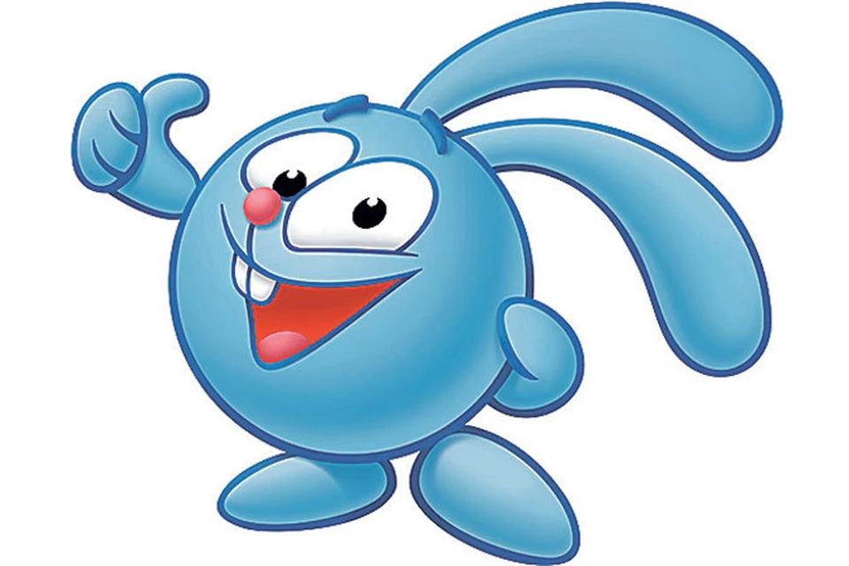

Мой любимый мультперсонаж

Крош — один из главных персонажей мультипликационной франшизы «Смешарики», весёлый и энергичный кролик мужского пола, живущий в Ромашковой долине вместе с другими смешариками.